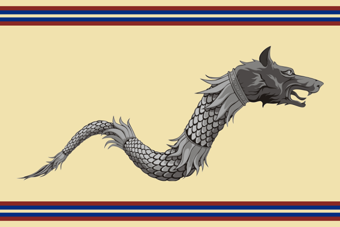
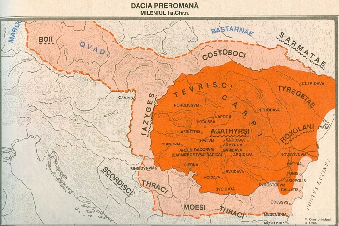
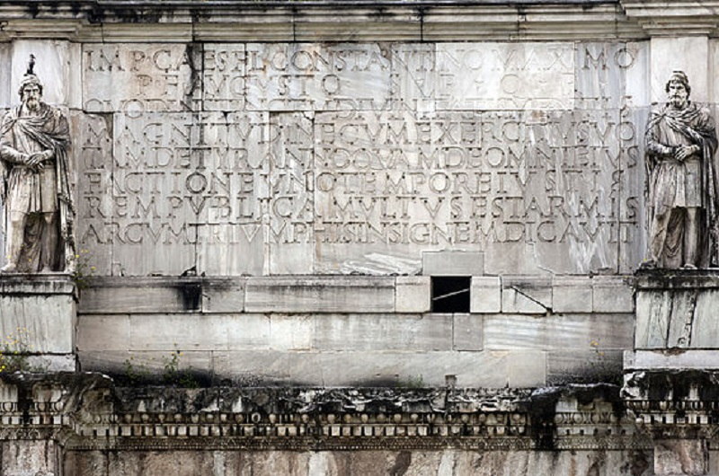
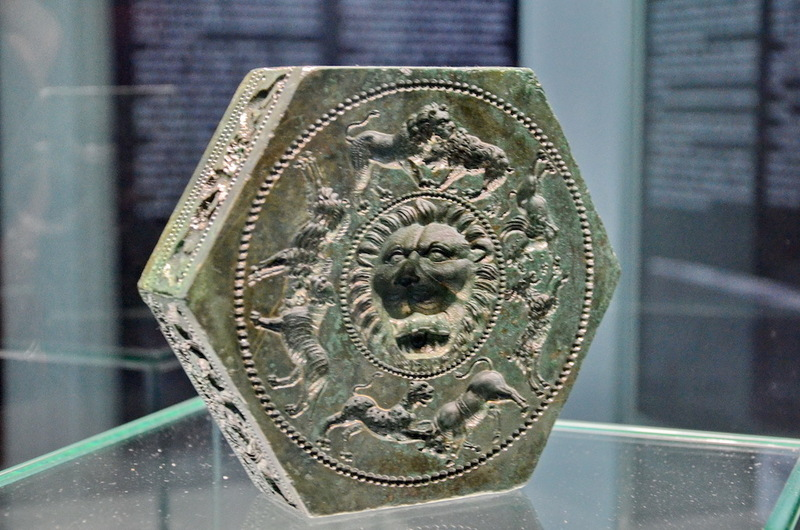
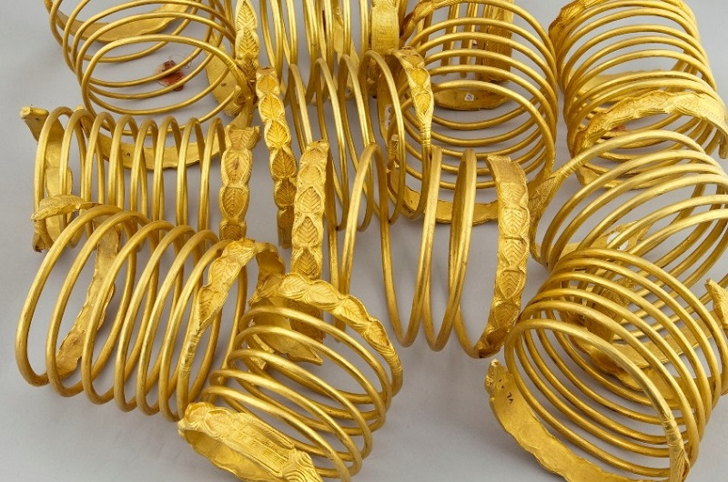

© Andrei Bertescu


 printați
printați
+40 725 099 253 |
andrei.bertescu2@gmail.com |
Dacii și civilizația geto-dacă
Dacia era în Antichitate țara locuită de geto-daci, care erau împărțiți într-un număr mai mare de state, iar ei ocupau un teritoriu cuprins între: râul Tisa (vest), râul Nistru și Marea Neagră (est), Dunărea (sud) și Carpații Păduroși (nord). În anumite părți chiar depășeau aceste hotare: spre est peste Nistru, „înaintând până spre Bug”, iar spre vest, „ajunseră până la Dunărea panonică”.
Regatul dacic a ajuns la cea mai mare întindere a sa în timpul regelui Burebista, având ca hotare: țărmul Mării Negre și Bugul - spre est, Cadrilaterul boem, Dunărea panonică și Morava - spre vest, Carpații Păduroși - spre nord, iar Muntele Haemus (lanțul Balcanilor) - spre sud. Capitala regatului era orașul Argedava.
Conform informațiilor rămase de la Strabon, dacii locuiau în zona muntoasă până în partea superioară a Dunării, denumită Danubius - de la izvoare și până la Drobeta, iar geții stăpâneau partea de la cataracte, denumită Istru până la vărsarea acesteia în Marea Neagră. Tot el spune că „dacii au aceeași limbă cu geții” și că „elenii i-au socotit pe geți de neam tracic”. De asemenea, Dio Cassius ce spune că regele getic Burebista i-a zdrobit pe boii și tauriscii conduși de regele Critasir, afirmă că Critasir a fost învins de daci, și păstrează denumirea luptătorilor armatei de geți sau daci pentru a denumi popoarele de la Nord.
|  |  |
Civilizație și cultură
Dacii erau organizați în state și aveau cetăți numite dava. Din agricultură obțineau: grâu, vin, miere, creșteau vite și cai, dar și pescuiau. Îmbrăcămintea era făcută din lână de oaie și din cânepă. Dacă la șes locuințele erau făcute din nuiele împletite pe pari și zidite cu pământ, la deal și la munte ele erau făcute din lemn, folosindu-se bârnele încheiate. Conducerea o avea regele, ajutat de un sfat de nobili, și mai era consiliat de un preot. Dacii se ocupau cu extracția și prelucrarea metalelor din care confecționau unelte, arme, obiecte de cult sau mobilier, podoabe, vase și monede. Ceramica era prelucrată atât cu mâna cât și cu roata olarului și devenise o artă. Slujbele religioase se țineau în sanctuare ce aveau formă patrulateră sau circulară. Ritualul funerar consta în arderea morților, iar cenușa era pusă în urne și îngropată în pământ. Dacii iubeau muzica. Izvoarele antice spun că ei cântau din gură, dar și din chitare. Dion Chrysostomos îi socotea pe geți la fel de înțelepți ca și grecii.
●Religie
Dacii obținuseră deja un oarecare grad de civilizație între popoarele barbare până să ia pentru prima dată contact cu romanii, și aveau o cultură asociată perioadei La Tène din Epoca Fierului. Ei credeau în nemurirea sufletului și considerau moartea ca o simplă schimbare de țară. Conducătorul preoților avea o poziție importantă ca reprezentant al zeității supreme, Zamolxis/Zalmoxis/Zalmoksha, pe pământ, fiind de asemena și sfătuitorul regelui.
Criton (doctorul lui Traian) în Getica a spus că „regii geți au impus frică de zei și concordie prin abilitați și magie, bucurându-se astfel de un statut înalt”. Co-guvernarea preot-rege în Dacia (regele fiind în cele din urmă, mult mai puternic) este similară cu relația Enaree-rege (la sciți), druid-rege (la celți) și chakravartin-yogin (în India), urmând astfel un model comun în nordul Eurasiei al acelor vremuri. În afară de Zamolxis/Zalmoxis (numit și Gebeleizis de către unii dintre ei), dacii mai credeau și în alte zeități, Derzelas și Bendis, cu toate ca existența lor nu a fost confirmată prin surse de natură arheologică.
●Societate
Ei erau împărțiți în două clase sociale: aristocrația, numită pileati sau tarabostes și agricultorii liberi, comatii; un număr mic de izvoare istorice menționează și prezența sclavilor. Primii, care aveau dreptul să-și acopere capul purtând o cușmă și formau o clasă privilegiată. Ceilalți, care formau grosul armatei, erau țărani și meșteșugari și purtau părul lung - capillati. Una din armele lor era „sica”.
●Economie
Ocupațiile principale erau agricultura (în special cereale, pomi fructiferi și viță-de-vie), creșterea vitelor și oilor și cunoșteau apicultura; caii erau folosiți mai ales ca animale de povară, dar caii crescuți de daci aveau și faima de a fi foarte buni în război. Ei făceau comerț cu cetățile grecești care, pe atunci, se aflau pe țărmul Mării Negre. De asemenea, extrăgeau aur și argint din minele din Transilvania și aveau un comerț înfloritor cu exteriorul, constatabil și prin numărul mare de monede grecești si romane descoperite.
Primele monede geto-dace au apărut prin secolul al III-lea î.Hr. și le imitau pe cele macedonene (emise de Filip al II-lea, Alexandru cel Mare și Filip al III-lea). Bătute din argint, după cum atestă tezaurele descoperite la Jiblea (județul Vâlcea), Dumbrăveni (județul Vrancea), monedele geto-dace și-au încetat existența către sfârșitul secolului al II-lea î.Hr și primele decenii ale secolului I î.Hr., o dată cu pătrunderea în regiune a denarului roman (denarius). Aceștia vor domina economia dacică inclusiv în secolul al II-lea d.Hr. Explicația constă în descoperirea unei monetării în cadrul căreia moneda romană republicană era falsificată în așezarea de la Sarmizegetusa Regia. Numărul mare de monede romane republicane descoperite pot fi explicate și în acest sens, nu doar prin relațiile comerciale înfloritoare între lumea dacică și cea greco-romană.
|  |  |  |